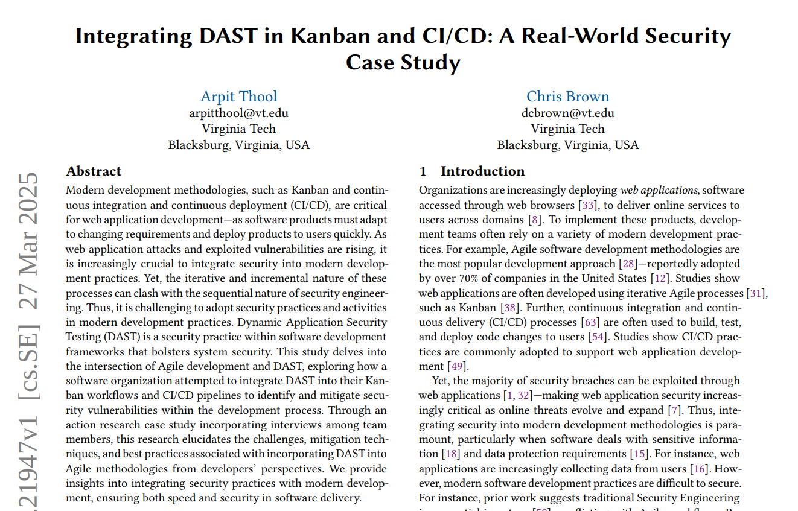
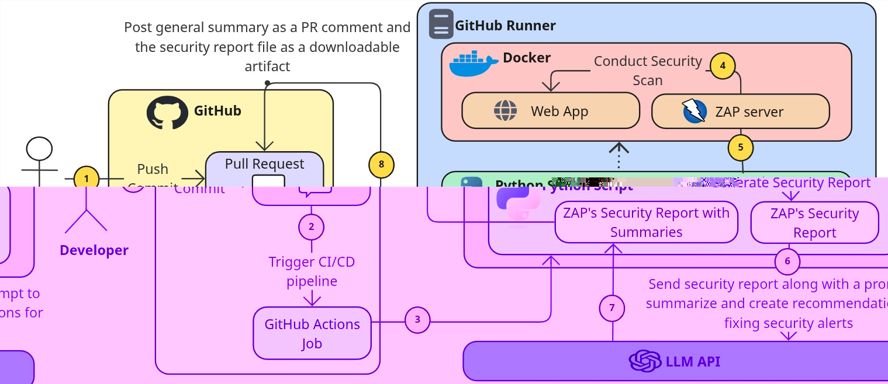
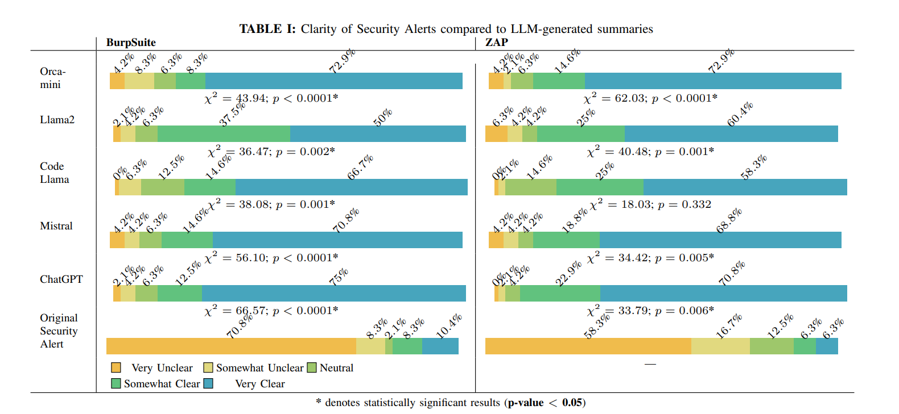
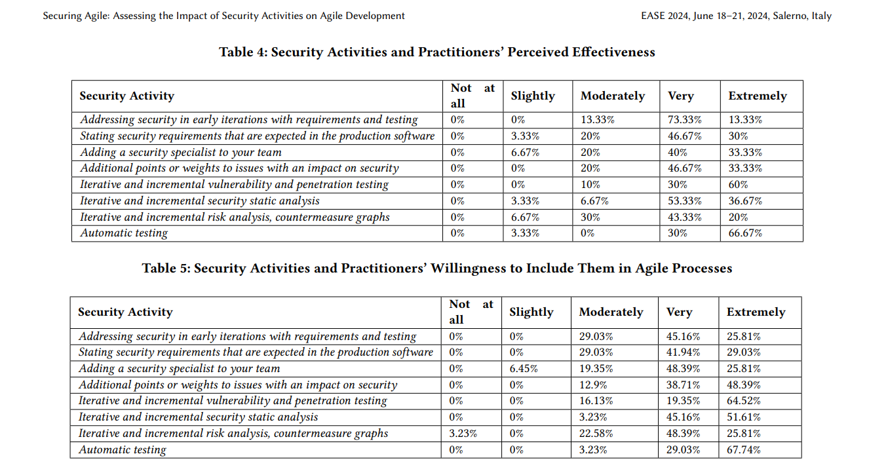

|
Arpit Thool
Research Scientist, Adobe Research Engineering & Design (RED)
I'm a Research Scientist at Adobe's Research Engineering and Design (RED) lab, where I advance AI-powered creative tools through applied research in video, depth estimation, and generative media.
I recently completed my PhD in Computer Science at Virginia Tech, advised by Dr. Chris Brown.
My doctoral research integrated AI-driven tools — including large language models (LLMs) — into software security workflows to generate actionable, human-centric security insights.
Earlier, I completed two research internships at Adobe (Firefly and Research), and I bring 4+ years of industry experience spanning frontend and backend development, DevOps, and security engineering.
Email /
CV /
Scholar /
GitHub /
LinkedIn
|
|
|

|
Integrating Log-Based Security Analytics in Agile Workflows: A Real-World Experience Report
Arpit Thool,
Chris Brown
arXiv, 2026
arXiv
An experience report on integrating log-based fraud/anomaly detection into a fast-moving Agile workflow, drawn from a cross-functional team iterating weekly on a real-world security analytics system.
|
|

|
SafeAIMerge: A Tool for Integrating DAST and LLM-Generated Security Feedback into GitHub Actions Workflows
Arpit Thool,
J. Smith,
Chris Brown
Secure Development Conference (SecDev), 2026
code /
video
A GitHub Actions–based CI/CD security scanner that runs ZAP, summarizes findings with an LLM, and posts developer-friendly, actionable feedback directly on pull requests.
|
|
|
Practitioner Perspectives of DAST Integration in Agile Development Workflows: An Experience Report
Arpit Thool,
Chris Brown
ACM International Conference on the Foundations of Software Engineering (FSE), Industry Track, 2026
arXiv
A study of a real-world team integrating DAST into a Kanban-based Agile process and CI/CD pipelines, based on semi-structured interviews with practitioners about benefits, challenges, and trade-offs.
|
|

|
Harnessing the Power of LLMs: LLM Summarization for Human-Centric DAST Reports
Arpit Thool,
Chris Brown
IEEE Symposium on Visual Languages and Human-Centric Computing (VL/HCC), 2024
IEEE
Uses LLM summarization to turn verbose Dynamic Application Security Testing (DAST) reports into concise, human-centric summaries that improve developer comprehension of security findings.
|
|

|
Securing Agile: Assessing the Impact of Security Activities on Agile Development
Arpit Thool,
Chris Brown
International Conference on Evaluation and Assessment in Software Engineering (EASE), 2024
ACM
An empirical assessment of how integrating security activities affects Agile software development practices, delivery, and team workflows.
|
|
|
Farming of Primes: An Algorithm to Cultivate Primes from First Known N-primes
Arpit Thool,
Uday Thool
International Journal of Advanced Engineering and Management (IJAEM), 2020
paper
A division-free algorithm that generates primes from the first N known primes, along with a fast sieve for extracting small primes.
|
| Program Committee, ICSE 2027 (SEIP track) — 49th IEEE/ACM International Conference on Software Engineering, Software Engineering in Practice track |
| Program Committee, SANER 2027 (Industry track) — 34th IEEE International Conference on Software Analysis, Evolution and Reengineering |
| Program Committee, CHASE 2027 (Research track) — 20th International Conference on Cooperative and Human Aspects of Software Engineering |
| Program Committee, SIGCSE TS 2026 — 57th ACM Technical Symposium on Computer Science Education (ACM Special Interest Group on Computer Science Education) |
| Program Committee, SE4AgenticAI 2026 — 2nd IEEE Big Data International Workshop on Software Engineering for Agentic AI |
| Junior Program Committee, MSR 2025 (Junior PC track) — 22nd IEEE/ACM International Conference on Mining Software Repositories |
| Feb 2026 – Present | Research Scientist, Adobe (Research Engineering & Design lab)
Advancing AI-powered creative tools through applied research in video, depth estimation, and generative media. |
| May – Aug 2025 | Research Engineer Intern, Adobe (Firefly)
Built caching and infrastructure improvements for Eval Hub, Adobe's internal AI-model evaluation platform. |
| Aug 2021 – May 2025 | Software Engineer, Virginia Tech (Security & Identity Services)
Security automation: DAST/ZAP scanning, load testing, and Python/Flask fraud-detection middleware. |
| May – Aug 2024 | Research Engineer Intern, Adobe (Research)
Built the image-analysis pipeline for Project Stardust, an AI-powered object-based image editor. |
| May – Aug 2022 | Software Engineer Intern, Lutron
Java/Spring + Terraform automation and CI/CD tooling for cloud resource migration. |
| Sep 2020 – Jul 2021 | Associate Software Engineer, Acquia (Marketing Cloud)
Built and maintained features for Campaign Factory and Campaign Studio (VueJS, PHP). |
| Sep 2019 – Mar 2020 | Software Engineer Intern, Technogong
Developed a restaurant-management mobile app (Java, PHP, MySQL). |
| Aug 2021 – Jan 2026 | Ph.D., Computer Science, Virginia Tech
Advised by Dr. Chris Brown. Dissertation: Bridging Security and Agility: Integrating Security Practices in Agile Development through DAST, LLMs, and Automation. |
| Aug 2021 – May 2024 | M.S., Computer Science, Virginia Tech |
| Aug 2016 – Apr 2020 | B.E., Computer Engineering, University of Pune |
| AI Agent on Hugging Face — an LLM chat app (Qwen) with an agentic backend that fetches local time and searches the web via tool integrations. |
| Perspective Transformation — C++/OpenCV app for top-view perspective transformation on a selected video region. |
| Image Transform — C++/OpenCV image editor (grayscale, brightness/contrast, blur, edge detection). |
| Cutout Tool — C++/OpenCV tool to select an object, build a foreground mask, and export an RGBA PNG. |
| Face Detection — C++/OpenCV face detector with bounding boxes and playful hat overlays. |
| Blogger — TypeScript/AdonisJS + PostgreSQL blogging platform (MVC), deployed on AWS EC2. |
| GoLLM — a ChatGPT-style UI (Go + Bootstrap) over a llama-2 model served with Ollama on AWS EC2. |
| Task Manager — FARM stack (FastAPI, React, MongoDB) task app with a REST backend, deployed on AWS. |
| Travel Diary & Planner — Java Jakarta EE app aggregating currency, hotels, weather, and COVID-19 stats via REST APIs. |
| Car Mapping — Flask + MongoDB app on Heroku with a Jenkins CI/CD pipeline and GitHub webhooks. |
| Amazon Clone — React + Firebase storefront with auth, Firestore, and Stripe payments. |
|